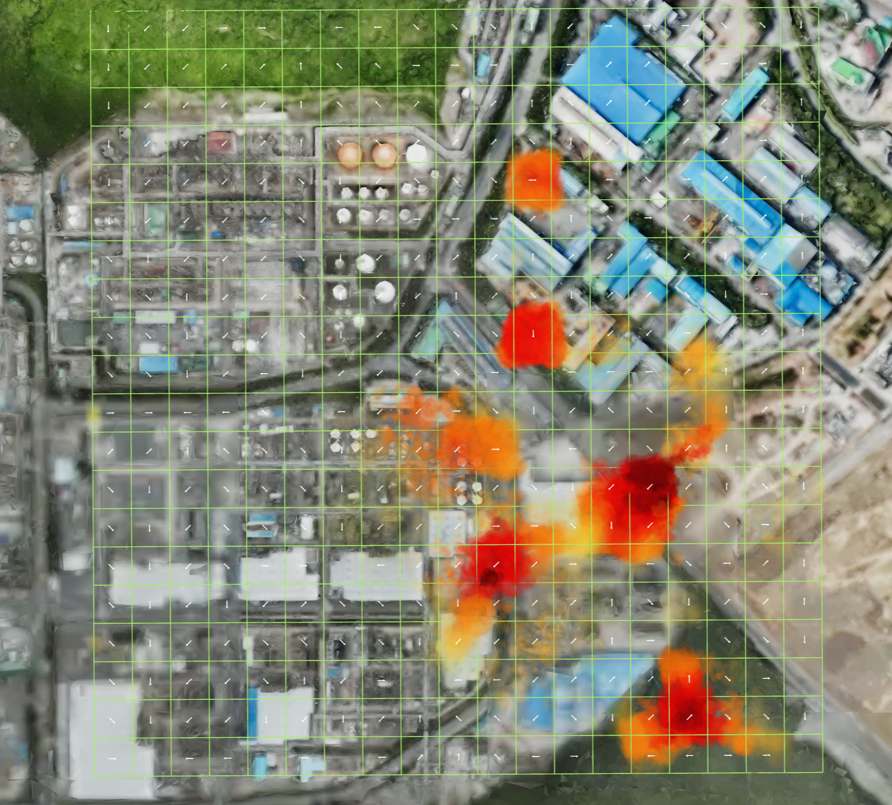
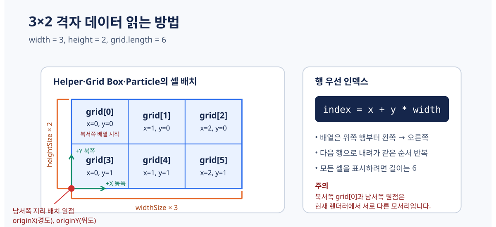
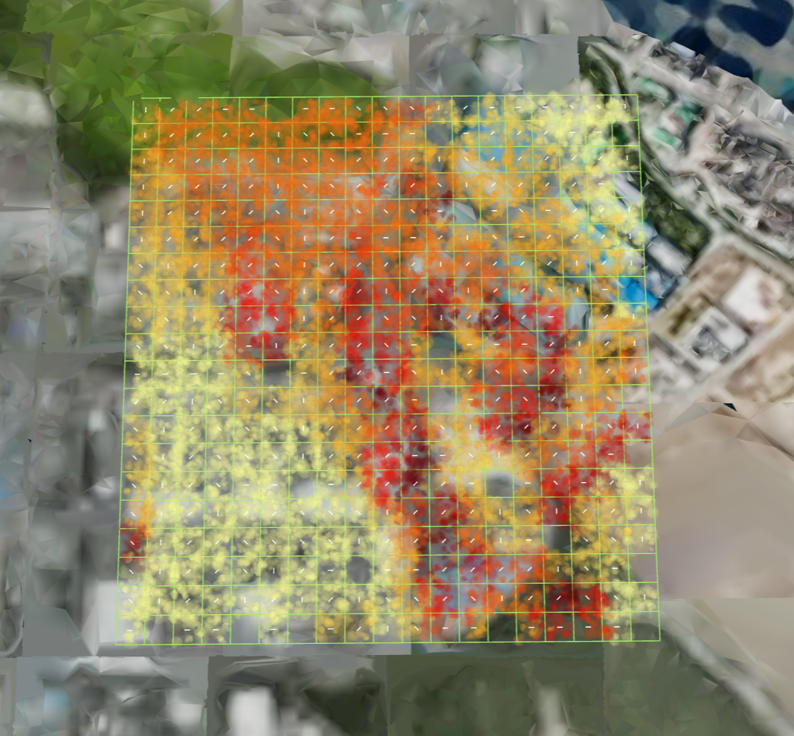
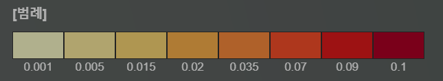
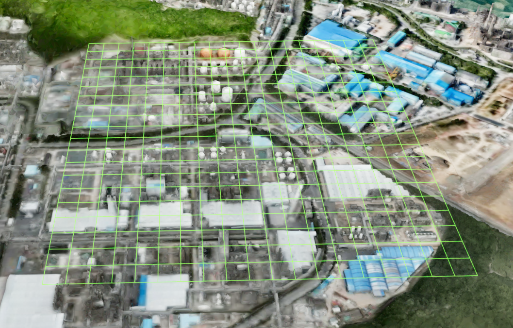
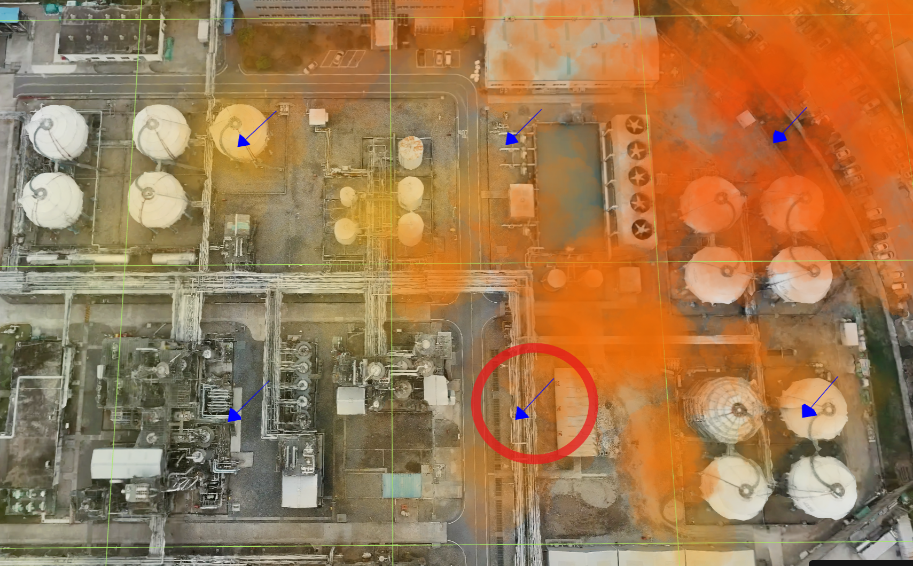

오염확산 (GESpreadObject)
목차
- 오염확산 이해하고 Addon 준비하기
- 시간대별 격자 데이터 구성하기
- 확산 객체 생성하고 실행하기
- 확산 모드와 격자 모드 비교하기
- 범례와 시간별 표현 설정하기
- 애니메이션과 내부 표현 시간 제어하기
- 격자와 방향 Helper로 입력 확인하기
- 객체와 리소스 정리하기
GESpreadObject는 사용자가 준비한 시간대별 격자 수치를 Particle로 표현하여 공간적인 분포 변화를 확인하는 Addon입니다.
오염 물질의 이동을 새로 계산하는 화학·기상 예측 모델이 아니라 입력 데이터를 3D 화면에 표현하는 기능입니다.

1. 오염확산 이해하고 Addon 준비하기
오염확산 기능을 사용하려면 기본 GeOnDT 엔진에 GESpreadObject 스크립트를 추가하고 Addon을 한 번 활성화해야 합니다.
- Addon: 기본 엔진에 별도의 기능을 덧붙이는 확장 모듈입니다.
- Particle: 오염 수치를 점이나 작은 구름 이미지로 보여 주는 화면 요소입니다.
- Emitter: Particle을 일정한 속도로 계속 만들어 내는 발생기입니다.
- 격자(Grid): 대상 영역을 일정한 크기의 칸으로 나눈 구조입니다. 칸 하나를 셀(Cell)이라고 합니다.
- 범례(Legend): 수치 구간을 어떤 색상과 투명도로 표시할지 정한 규칙입니다.
- Helper: 실제 분석 결과가 아니라 격자 범위나 진행 방향을 확인하기 위한 보조선과 화살표입니다.
API
GeOnDT.addon(extension) : GeOnDT에 Addon 기능을 적용하는 함수
매개변수
extension(class) : 적용할GESpreadObjectAddon 클래스. 필수
API
U3dApp.getAnalysis(name) : 앱에 준비된 분석 객체를 이름으로 가져오는 함수
매개변수
name(string) : 가져올 분석 이름. 오염확산은Particle사용. 필수
반환값
return(UAnalyParticle | undefined) : Particle 분석 객체
1. Addon 활성화하기
Addon 스크립트는 GeOnDT 스크립트보다 뒤에 불러오고, GeOnDT.ready() 안에서 앱 시작 시 한 번만 적용합니다.
<script src="/extension/GESpreadObject/GESpreadObject.js" type="module"></script>
GeOnDT.ready(function () {
GeOnDT.addon(GESpreadObject);
const particleAnalysis = app.getAnalysis('Particle');
if (!particleAnalysis) {
throw new Error('Particle 분석 객체를 찾을 수 없습니다.');
}
});
GeOnDT.addon(GESpreadObject)는 적용 후 전역의 GESpreadObject 참조를 정리하므로 같은 Addon을 반복해서 호출하지 않습니다.
2. 시간대별 격자 데이터 구성하기
오염확산 입력은 data 배열로 전달합니다. 배열 항목 하나는 한 시간대의 격자 상태이며, 모든 셀의 수치를 grid라는 1차원 배열에 담습니다.

- 스냅샷(snapshot): 특정 시간의 격자 상태 한 장입니다.
data[0],data[1]처럼 저장합니다.- 행 우선 순서(row-major): 한 행을 왼쪽에서 오른쪽으로 저장한 뒤 다음 행으로 내려가는 배열 순서입니다.
- 원점(origin): 격자 영역을 지도에 배치할 때 기준으로 사용하는 시작 위치입니다. 현재 Helper·Particle 배치에서는 전체 격자의 남서쪽(왼쪽 아래) 모서리입니다.
현재 렌더러에서 originX, originY는 전체 격자 영역의 남서쪽(왼쪽 아래)을 가리키고, grid[0]은 북서쪽(왼쪽 위) 셀부터 읽습니다. 즉, 지리 배치 원점과 배열의 첫 번째 셀은 서로 다른 위치입니다. 이 그림은 Helper와 Particle의 셀 배치 기준이며, Grid Mesh의 정점 배치 예외는 오염확산 격자 데이터 3D 가시화에서 설명합니다.
격자 한 칸의 배열 인덱스는 다음 식으로 계산합니다.
const index = x + y * width;
const value = grid[index];
grid.length는 반드시 width * height와 같아야 모든 셀을 빠짐없이 표시할 수 있습니다.
| 속성 | 의미 |
|---|---|
time | 해당 스냅샷의 시간. 초 단위 사용 |
originX | 격자 영역의 남서쪽(왼쪽 아래) 모서리를 배치할 경도 |
originY | 격자 영역의 남서쪽(왼쪽 아래) 모서리를 배치할 위도 |
widthSize | 셀 하나의 가로 크기. 엔진 월드 길이이며 일반적으로 미터 기준으로 준비 |
heightSize | 셀 하나의 세로 크기. 엔진 월드 길이이며 일반적으로 미터 기준으로 준비 |
width | X 방향 셀 개수 |
height | Y 방향 셀 개수 |
gridHeight | Particle과 Helper를 배치할 절대 기준 Z. 지형 높이를 자동으로 조회하거나 따라가지 않음 |
grid | 각 셀의 오염 수치를 저장한 1차원 배열 |
windSpeed | 격자 데이터에 포함하는 속도 정보. 현재 업데이트 경로에서는 화면 재생 속도 조절 효과가 상쇄될 수 있음 |
windDirection | 데이터에 저장할 수 있는 풍향 정보. 현재 Addon의 방향 계산에는 직접 사용되지 않음 |
1. 실행 가능한 3×2 데이터 만들기
여러 시간대 데이터를 사용할 때는 originX, originY, 셀 개수와 셀 크기를 동일하게 유지하는 편이 안전합니다. time은 오름차순으로 준비합니다.
const pollutionData = [
{
time: 0,
originX: 129.3338772330962,
originY: 35.49181010514321,
widthSize: 50,
heightSize: 50,
width: 3,
height: 2,
gridHeight: 100,
windSpeed: 1,
windDirection: 22.5,
grid: [10, 25, 40, 15, 30, 55],
},
{
time: 600,
originX: 129.3338772330962,
originY: 35.49181010514321,
widthSize: 50,
heightSize: 50,
width: 3,
height: 2,
gridHeight: 100,
windSpeed: 1,
windDirection: 22.5,
grid: [8, 20, 35, 18, 38, 70],
},
];
grid 값의 단위와 위험 기준은 엔진이 정하지 않습니다.
농도, 온도 또는 사용자 정의 지수 중 무엇을 넣었는지 별도로 관리하고, 범례 구간도 해당 프로젝트의 실제 단위와 기준에 맞춰야 합니다.
3. 확산 객체 생성하고 실행하기
격자 데이터를 Particle로 표시하려면 UAnalyParticle.initialize()로 객체를 만들고 분석을 활성화합니다.
API
UAnalyParticle.initialize(opt) : 입력 옵션으로 Particle 확산 객체를 생성하는 함수
매개변수
opt(object) : Particle 생성 옵션. 필수opt.name(string) : 객체 검색과 제거에 사용할 고유 이름. 필수opt.type(string) : 격자 기반 오염확산은grid사용. 필수opt.gridMode(string) :spread또는grid. 기본값:spreadopt.position(object) : 엔진 초기화에 필요한{x, y, z}위치. 격자의 실제 배치는data.originX,data.originY사용opt.data(object[]) : 시간대별 격자 데이터.type: 'grid'에서 필수opt.particleImage(string) : Particle에 사용할 이미지. 생략 시 현재 Grid 경로의 기본 구름 이미지 사용opt.particlesPerSecond(number) : 초당 생성할 Particle 수opt.particleDeathAge(number) : Particle 한 개가 유지되는 시간opt.emitterDeathAge(number) : Emitter가 Particle 생성을 유지하는 시간opt.legend(function) : 값에 따라 색상과 투명도를 반환하는 범례 함수
반환값
return(UParticleEngine | undefined) : 생성한 확산 객체 또는 생성하지 못한 경우undefined
API
UAnalyParticle.active() : Particle 분석을 활성화하고 화면 갱신을 시작하는 함수
1. 최소 옵션으로 생성하기
현재 구현에서는 격자 배치가 data.originX, data.originY를 사용하더라도 엔진 초기화를 위해 position을 함께 전달하는 것이 안전합니다.
const particleOptions = {
name: 'POLLUTION_SAMPLE',
type: 'grid',
gridMode: 'spread',
position: {x: 0, y: 0, z: 0},
particleImage: GeOnDT.UDefaultSource.PARTICLE_CIRCLE_IMAGE,
data: pollutionData,
particlesPerSecond: 30,
particleDeathAge: 10,
emitterDeathAge: 60,
sizeTween: [[0, 5, 10], [8, 25, 45]],
opacityTween: [[0, 5, 10], [0.1, 0.6, 0]],
colorTween: [[0, 10], ['#ffffbf', '#d73027']],
};
const particle = particleAnalysis.initialize(particleOptions);
if (!particle) {
throw new Error('오염확산 객체를 생성하지 못했습니다.');
}
particleAnalysis.active();
동시에 유지될 수 있는 Particle 수는 particlesPerSecond * Math.min(particleDeathAge, emitterDeathAge)의 영향을 받습니다. 처음에는 작은 값으로 시작하고 화면 성능과 메모리 사용량을 확인하면서 늘립니다.
4. 확산 모드와 격자 모드 비교하기
gridMode는 같은 격자값을 Particle로 배치하고 움직이는 방식을 결정합니다.
| 모드 | 표현 방식 | 적합한 확인 목적 |
|---|---|---|
spread | 셀 값을 상대 비율로 계산해 Particle 수를 배분하고 0이 아닌 이웃 중 현재 값 이하인 여러 방향을 이동 후보로 사용 | 값이 강한 영역에서 주변으로 이어지는 흐름 확인 |
grid | 각 셀 안에 Particle을 배치해 시간대별 분포를 표현 | 셀별 수치 분포를 그대로 비교 |
두 모드 모두 입력 수치를 시각화할 뿐 새로운 확산 예측값을 계산하지 않습니다.

모드를 바꾸려면 객체를 정리한 뒤 particleOptions.gridMode를 변경하여 다시 생성합니다.
particleAnalysis.removeParticleByName('POLLUTION_SAMPLE');
particleOptions.gridMode = 'grid';
const gridParticle = particleAnalysis.initialize(particleOptions);
5. 범례와 시간별 표현 설정하기
범례는 원본 수치 또는 spread 모드에서 계산한 상대 비율을 색상과 투명도로 바꿉니다.
- 원본값(value):
grid배열에 입력한 실제 수치입니다.- 상대 비율(allocation): 같은 스냅샷 안에서 각 셀이 차지하는 상대적인 비중입니다. 원본 단위가 아닙니다.
- Tween: 지정한 두 시점 사이의 크기·색상·투명도를 선형으로 이어 주는 설정입니다.
API
options.legend(info) : Particle의 색상과 투명도를 정하는 사용자 함수
매개변수
info(object) : 현재 Particle이 참조하는 수치 정보info.value(number) : 원본 격자 수치info.allocation(number | undefined) :spread모드에서 사용할 수 있는 상대 비율
반환값
return(object) :color와opacity를 담은 스타일 객체
1. 객체를 만들기 전에 범례 지정하기
pollutionLegend() 구현은 생성전에 설정하여, 범례는 initialize()를 호출하기 전에 options.legend에 넣습니다.
function pollutionLegend(info) {
if (info.allocation !== undefined) {
if (info.allocation > 0.1) {
return {color: '#b10026', opacity: 0.7};
}
if (info.allocation > 0.05) {
return {color: '#fc4e2a', opacity: 0.5};
}
return {color: '#ffffcc', opacity: 0.15};
}
if (info.value > 50) {
return {color: '#b10026', opacity: 0.7};
}
if (info.value > 20) {
return {color: '#fc4e2a', opacity: 0.5};
}
return {color: '#ffffcc', opacity: 0.15};
}
particleOptions.legend = pollutionLegend;
const particleWithLegend = particleAnalysis.initialize(particleOptions);

2. Tween 배열 구성하기
각 Tween은 [시간 배열, 값 배열] 형태입니다. 두 배열의 길이를 같게 하고 시간은 오름차순으로 작성하며, 마지막 시간은 particleDeathAge 안에 두는 것이 이해하기 쉽습니다.
particleOptions.sizeTween = [
[0, 5, 10], // 시간대 설정 ( 예시 : 5의 시간대의 25의 크기로 점차 변화하도록 설정 )
[8, 25, 45]
];
particleOptions.opacityTween = [
[0, 5, 10],
[0.1, 0.6, 0]
];
particleOptions.colorTween = [
[0, 10],
['#ffffbf', '#d73027']
];
6. 애니메이션과 내부 표현 시간 제어하기
애니메이션의 재생 상태와 Particle의 크기·색상·투명도를 계산하는 내부 시간은 서로 다른 값입니다.
setTime()은 data[0], data[1] 같은 격자 스냅샷으로 이동하는 함수가 아닙니다.
API
UAnalyParticle.setStart(name, idx) : 지정한 Particle 객체의 애니메이션을 시작하는 함수
매개변수
name(string) : 생성할 때 지정한 객체 이름idx(number) : 이름 대신 사용할 Particle 배열 인덱스. 생략 가능
API
UAnalyParticle.setStop(name, idx) : 지정한 Particle 객체의 애니메이션을 정지하는 함수
매개변수
name(string) : 생성할 때 지정한 객체 이름idx(number) : 이름 대신 사용할 Particle 배열 인덱스. 생략 가능
API
UAnalyParticle.setTime(time, name, idx) : Particle의 Tween을 지정한 내부 시간 기준으로 다시 계산하는 함수
매개변수
time(number) : 크기·색상·투명도를 다시 계산할 Particle 내부 시간. 초 단위. 필수name(string) : 대상 Particle 객체 이름idx(number) : 이름으로 찾지 못했을 때 사용할 Particle 배열 인덱스. 생략 가능
particleAnalysis.setStop('POLLUTION_SAMPLE');
particleAnalysis.setTime(5, 'POLLUTION_SAMPLE');
particleAnalysis.setStart('POLLUTION_SAMPLE');
setTime()은 각 Particle의 sizeTween, opacityTween, colorTween 상태만 갱신합니다. 격자 스냅샷 선택이나 Particle 위치 이동에는 사용하지 않습니다.
windSpeed는 입력 자료의 실제 풍속 단위와 동일하다고 단정할 수 없으며, 현재 업데이트 경로에서는 속도 배수가 상쇄될 수 있습니다. 화면 재생 속도를 조절하는 공개 옵션으로 사용하기 전에 실제 동작을 별도로 확인합니다.
7. 격자와 방향 Helper로 입력 확인하기
Helper는 격자의 위치와 셀 간 계산 방향을 확인하는 진단용 객체입니다. 실제 오염 수치 결과와 구분해서 사용합니다.
1. 격자 범위 확인하기
API
UAnalyParticle.createGridHelper(option) : 입력 데이터의 범위와 셀 경계를 선으로 생성하는 함수
매개변수
option(object) :data를 포함한 오염확산 옵션. 필수
API
UAnalyParticle.showGridHelper(val) : Grid Helper의 표시 여부를 바꾸는 함수
매개변수
val(boolean) : 표시 여부. 필수
particleAnalysis.createGridHelper({data: pollutionData});
particleAnalysis.setGridHelperColor('#00ff00');
particleAnalysis.setGridHelperOpacity(0.8);
particleAnalysis.showGridHelper(true);

2. 셀 간 계산 방향 확인하기
API
UAnalyParticle.createGridArrowHelper(options) : 주변 셀 수치를 비교해 계산한 방향을 화살표로 생성하는 함수
매개변수
options.name(string) : Helper 객체 이름. 필수options.data(object[]) : 방향 계산에 사용할 격자 데이터. 필수options.arrowHelperColor(Color) : 화살표 색상. 기본값:#ffffffoptions.arrowHelperOpacity(number) : 화살표 불투명도. 기본값:1options.arrowLength(number) : 화살표 길이. 기본값:10options.visible(boolean) : 생성 직후 표시 여부. 기본값:true
반환값
return(UGroup[]) :data항목별 Arrow Helper 그룹 목록
const arrowGroups = particleAnalysis.createGridArrowHelper({
name: 'POLLUTION_SAMPLE',
data: pollutionData,
arrowHelperColor: '#0000ff',
arrowHelperOpacity: 1,
arrowLength: 10,
visible: true,
});
Arrow Helper는 windDirection 값을 직접 그리지 않습니다. 현재 구현에서는 값이 0이 아닌 이웃 중 현재 셀 값 이하인 최솟값 방향을 계산해 표시합니다. 같은 양수 값이 이어진 셀에서도 화살표가 생길 수 있습니다.

격자 수치를 높이가 있는 Box 또는 연속 표면으로 표현하려면 오염확산 격자 데이터 3D 가시화를 참고합니다.
8. 객체와 리소스 정리하기
Particle만 제거하는 API와 Helper·Mesh 리소스를 제거하는 API의 범위가 다릅니다.
| 호출 | 정리되는 대상 |
|---|---|
removeGridArrowHelper(name) | 독립적으로 만든 Arrow Helper |
removeGridMesh(name) | 초기화 과정에서 생성된 Grid Mesh와 같은 이름의 Mesh |
removeGridHelper() | 격자 선 Helper |
removeParticleByName(name) | 지정한 Particle 객체 |
removeAllParticle() | 모든 Particle과 기본 Grid Helper |
deactive() | Particle 분석을 종료하고 Particle을 정리 |
API
UAnalyParticle.removeParticleByName(name) : 이름이 일치하는 Particle 객체를 제거하는 함수
매개변수
name(string) : 제거할 Particle 객체 이름. 필수
API
UAnalyParticle.deactive() : Particle 분석을 종료하고 내부 Particle을 정리하는 함수
Addon 초기화 과정에서는 화면에 보이지 않는 Grid Mesh도 생성될 수 있습니다. 사용한 Helper와 Mesh를 먼저 제거한 뒤 Particle을 정리합니다.
particleAnalysis.removeGridArrowHelper('POLLUTION_SAMPLE');
particleAnalysis.removeGridMesh('POLLUTION_SAMPLE');
particleAnalysis.removeGridHelper();
particleAnalysis.removeParticleByName('POLLUTION_SAMPLE');
// Particle 분석을 완전히 종료할 때 사용합니다.
particleAnalysis.deactive();